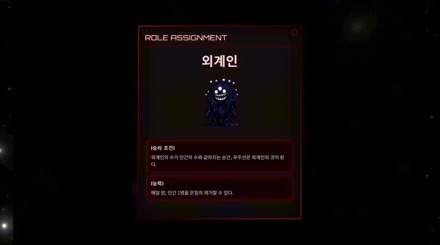
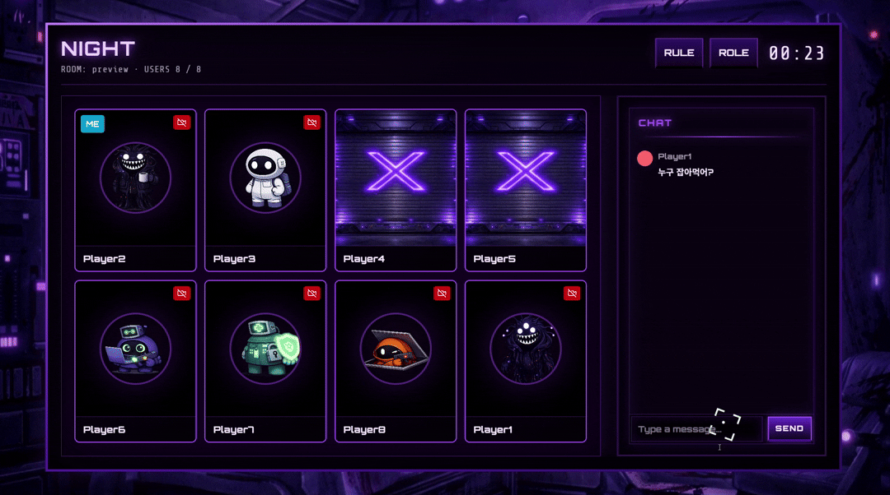
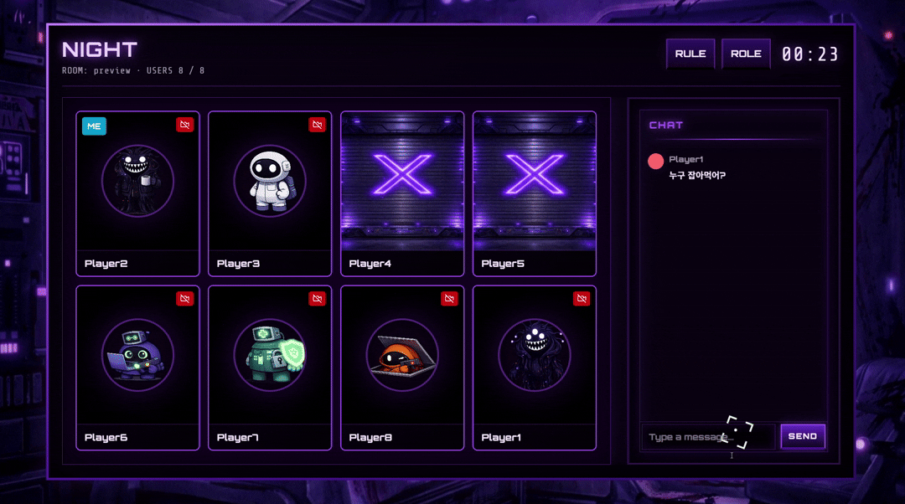

About

안녕하세요. 백엔드 개발자 김승현입니다.
다방면으로 기술을 공부하여 서비스를 구축해보려는 시도를 합니다.
- 단순히 프로그래밍 언어를 공부하는 것이 아닌, 전체적인 프로세스 흐름을 파악하는 것을 중요하게 생각합니다.
- "승현님 덕에 개발이 편했어요" 라는 말을 듣는 것이 좋습니다. 초기 환경 구축, 모니터링, CI/CD 작업의 자동화 등 팀의 생산성 향상을 위해 적극적으로 기여하고 있습니다.
- 나만 알고 넘어가는 것이 아니라, 팀원들도 이해할 수 있도록 학습한 내용과 문제 해결 과정을 문서로 정리하고 공유하고 있습니다.
맡은 일에 책임감을 느끼며 잘 마무리 하는 것을 중요하게 여깁니다.
- 자신만이 아는 것이 아니라 해당 코드를 유지보수할 뒤에 사람을 위한 가이드를 제시합니다.
- 시간에 따라 자연스럽게 변화하는 서비스에 맞춰 확장성과 유지보수를 용이하게 하는 코드를 작성합니다.
- 단순히 개발을 하는 직군이 아닌 타 팀과의 협력에 적극적으로 참여하여, 의견을 내는 것이 더 좋은 서비스를 만들거라 생각합니다.
Work Experience

KYOBO_DTS CSPM
DevOps / Backend / Frontend 2024.07 - 2024.08 (2개월) 6인 개발🧩 프로젝트 개요
Cloud Security Posture Management(CSPM) 기반으로 AWS 자원을 수집·스캔하여 취약점을 탐지하고 상태를 관리하는 시스템입니다.

⚙️ 핵심 로직
자원 수집, 정책 기반 취약점 판단, 상태 트래킹(OPEN/EXCEPTION/CLOSE)을 위한 파이프라인과 스케줄러가 핵심입니다.

👨💻 주요 기여도
Backend
AWS SDK 기반 자원 스캔 로직 개발 및 고도화
EC2, S3, RDS 등 주요 AWS 자원을 대상으로 스캔 로직을 구현하고, 정기 스케줄링을 통해 상태를 주기적으로 수집하도록 개선했습니다.
DB 테이블 재설계
기능별 테이블 분리로 인한 관리 부담을 해소하기 위해 단일 테이블에 JSON으로 다르게 들어오는 데이터 구조를 저장하도록 설계하고, 정책 기반 파싱으로 필요한 필드를 추출하도록 구현했습니다.
취약점 탐지 및 상태 관리 시스템 설계/구현
SQL 쿼리문을 기반으로 취약점 탐지 정책 수립과 탐지 로직을 개발하고, 각 취약점의 OPEN/CLOSE 상태를 트래킹하는 워크플로우를 구축했습니다.
Frontend
자원 시각화를 위한 UI 컴포넌트 구현
AWS 자원 상세 정보와 필터/정렬 기능을 제공하는 UI를 구현해 사용자가 취약점을 쉽고 빠르게 탐색할 수 있도록 UX를 개선했습니다.
자원 필터링 및 상태 기반 검색 기능 개발
리소스 유형, 취약점 상태, 등록일 등 다중 조건 검색을 지원하는 클라이언트 사이드 필터를 구현했습니다.
DevOps
CI 구성 및 개발 환경 가이드
Docker Compose를 활용한 로컬 개발 환경 구성과 CI 파이프라인 가이드를 문서화하여 동료의 환경 재현성을 높였습니다.
사내망 배포 및 접근 제어 개선
내부망 배포 특성을 고려한 배포 가이드와 접근 제어 정책을 수립했습니다(사내 VPN, 방화벽 규칙 등).
🧯 트러블 슈팅
DB 테이블 과다 생성 문제 문제: 자원별 테이블 분리로 AWS 수집 자원이 늘어날때마다 DB 테이블이 늘어나야 되는 상황 발생 그로 인해 유지보수 및 확장성 문제 발생. 해결: 모든 자원을 JSON 형태로 단일 테이블에 저장하도록 변경. 리소스 타입은 구분 필드로 관리해 기존 14개 이상 테이블을 1개로 통합. 배운점: 확장성이 요구되는 도메인에서는 “정적 스키마 설계”보다 “유연한 데이터 모델”이 중요하고 생각하게 되었습니다. 이로 인해 NoSQL에 관심을 가지게 되었습니다.
자원 중복 저장 및 취약점 판단 방식 고도화 문제: 스캔 시 중복 자원 저장으로 데이터 적재가 과다. 해결: JSON 키 정렬 후 문자열 비교로 변경 여부 판단해 변경이 없으면 timestamp만 갱신. 배운점: 데이터 비교는 “내용 기반 비교”가 아닌 “구조 표준화 후 비교”가 필요하다고 느낍니다. 또한 해시 기반의 비교를 하면 더 최적화를 할 수 있다는 것을 깨달았습니다.
기존 코드 기반 기능 확장 문제: 이미 일부 구현된 코드에 새로운 요구사항을 반영해야 하는 상황 해결: 먼저 핵심 로직을 분석하고 관련 메서드를 디버깅해 역할을 파악한 뒤, 점진적으로 기능을 구현하고 기존 코드와 통합. 배운점: 레거시 코드 확장은 수정으로 시작하는게 아니라 이해부터 시작해야 된다고 생각하게 되었습니다. 또한 하나의 기능에 대한 API 명세서가 자세할수록 얼마나 좋은지 느끼게 되었습니다.
Project

A - 601
DevOps / Backend 2026.01 - 2026.02 (2개월) 6 -> 4인 개발(중도 이탈 발생)
🧩 프로젝트 개요
AI 판사 기반 몰입형 SF 서바이벌 마피아 게임 프로젝트입니다.

⚙️ 핵심 로직
WebSocket 기반의 이벤트 처리, 게임 룸 매니저, 상태 동기화와 기존 마피아 게임에 AI 판사 시스템을 이용한 판결이 핵심입니다.
 

👨💻 주요 기여도
Backend
백엔드 아키텍처 가이드 및 코드 리뷰 리딩
MVC 기반 폴더 구조와 API 설계 가이드를 제시하고, 팀원 코드 검증/리뷰를 통해 일관된 개발 흐름을 유지했습니다.
Livekit 기반 WebRTC 권한 제어 구현
OpenVidu 대신 Livekit(v3)로 WebRTC 환경을 구성하고, Access Token 기반 권한 설계를 통해 유저의 화상/음성 권한을 상황에 따라 제어할 수 있도록 구현했습니다.
WebSocket 기반 실시간 게임 엔진 설계/구현
REST 기반 설계의 한계를 개선하기 위해 서버 타이머 기반 게임 진행 구조를 설계하고 WebSocket으로 전환했습니다. 또한 Dual Channel(전체/개인)을 구성해 게임 상태와 개인 이벤트를 분리 전달하여 실시간 상호작용을 안정적으로 제공했습니다.
DevOps
Docker Compose 기반 개발·운영 인프라 구성
Livekit, Redis, MySQL, Nginx 환경을 docker-compose로 구성해 로컬 개발과 운영 환경을 일관되게 맞추고 재현성을 확보했습니다.
GitLab + Jenkins CI/CD 구축 및 배포 자동화
GitLab WebHook과 Jenkins 파이프라인을 연동해 빌드→도커 이미지→배포까지 자동화 흐름을 구축했습니다.
서버 네트워크 / 도메인 / TLS 인증 구성
Nginx, Certbot(Let's Encrypt), UFW로 네트워크 정책과 TLS 인증을 구성하고, 운영용 docker-compose 환경까지 포함해 배포 안정성을 강화했습니다.
🧯 트러블 슈팅
Livekit 권한 제어 과정에서의 버전 호환 이슈 문제: Livekit v3 기반 권한 제어 구현 과정에서, AI가 생성한 구버전 예제 코드가 최신 서버와 호환되지 않아 메서드 호출 및 권한 적용이 정상 동작하지 않았습니다. 해결: 공식 문서를 기반으로 권한 관련 메서드와 토큰 발급 방식을 재검증하고, 최신 버전에 맞게 권한 제어 로직을 수정하여 화상/음성 권한을 정상적으로 제어했습니다. 배운점: AI 생성 코드는 참고용일 뿐이며, 실제 적용 전에는 공식 문서 기반 검증과 버전 호환 확인이 필수라고 느꼈습니다.
Jenkins 기반 CI/CD 구축 중 배포 실패 문제: Jenkins 파이프라인을 통해 빌드 흐름을 구성했지만, 서버 배포 단계에서 권한 문제로 인해 배포가 정상 수행되지 않았습니다. 해결: Jenkins 로그를 분석해 권한 미설정 이슈를 확인했고, 필요한 실행/접근 권한을 부여하여 Git → Docker → Jenkins → Server 흐름을 안정화했습니다. 배운점: 툴을 단순히 “사용”하는 수준이 아니라, 장애 상황에서 로그 기반으로 원인을 추적하고 복구할 수 있는 운영 관점이 중요하다고 생각하게 되었습니다.
REST 기반 설계의 실시간성 한계로 WebSocket 전환 문제: 초기에는 REST로 게임을 구현하려 했으나, 특정 역할(예: 낮 시간 임의로 스킬 사용)의 특성상 실시간성 부족 문제가 발생했습니다. 해결: 서버 타이머 기반 진행 구조로 전환하고 WebSocket을 도입해 실시간 이벤트를 처리하도록 개선했습니다. 또한 Pub/Sub 패턴으로 프론트-백 메시지 규격을 정리해 통신 복잡도를 낮췄습니다. 배운점: 실시간 게임은 요청 기반이 아니라 상태 기반/이벤트 기반으로 설계해야 안정적이라는 점을 체감했습니다.
팀원 이탈로 인한 레거시 코드 정리 및 리팩토링 문제: 팀원 2명이 중도 이탈하며 코드 정리가 되지 않은 채 MR/커밋이 남았고, 최신 코드와 괴리로 충돌이 발생했습니다. 해결: 기존 코드를 리팩토링하여 구조를 정리하고, 이후에는 팀원이 코드 최신화를 유지할 수 있도록 브랜치/협업 가이드라인을 제시해야겠다고 정리했습니다. 배운점: 협업 프로젝트에서는 기술 구현 과정에서 코드 최신화 규칙과 협업 프로세스 설계가 서비스의 품질을 좌우한다고 생각하게 되었습니다.

Newstagram
DevOps / Backend 2025.11 - 2025.12 (2개월) 5인 개발
🧩 프로젝트 개요
Newstagram은 사용자의 활동 로그를 분석하여 RSS 뉴스 피드를 선별 제공하고, 개인화된 기사를 추천하는 지능형 뉴스 서비스입니다.

⚙️ 핵심 로직
RSS 뉴스 수집·정제, 핫 이슈 뉴스 피드, 개인 맞춤 뉴스 피드, 사용자 문장을 통한 나만의 뉴스 피드 제공이 핵심입니다.


👨💻 주요 기여도
Backend
사용자 문장 기반 기사 검색 AI 파이프라인 구축
사용자의 자연어 문장을 분석해 관련 기사를 벡터 기반으로 검색하는 AI 파이프라인을 설계·구현했습니다.
DevOps
Docker 기반 개발 환경 통합 및 초기 가이드 수립
운영체제(Windows/Linux) 차이에 상관없이 동일한 개발 환경을 유지할 수 있도록 Docker 기반 환경을 구성하고, 프로젝트 초기 세팅 가이드를 제공했습니다.
GitHub Actions 기반 CI/CD 구축
브랜치 전략에 맞춰 테스트 및 배포가 자동으로 진행되도록 CI/CD 파이프라인을 설계했습니다.
AWS 기반 MSA 환경 구축 및 모니터링 체계 설계
Spring 기반 서비스를 MSA 구조로 분리하여 각 역할별 서버를 독립적으로 운영하도록 설계했습니다.
🧯 트러블 슈팅
운영 환경 로그 메트릭 수집 문제 문제: 배포 이후 서버 상태 및 로그 흐름을 실시간으로 파악하기 어려웠습니다. 해결: CloudWatch Agent를 EC2에 설치하고 로그 및 메트릭 수집 설정을 구성해, 관리자용 대시보드를 구축했습니다. 배운점: 배포는 끝이 아니라 시작이며, 운영 환경에서는 모니터링 및 로그 확보가 필수라고 느꼈습니다.
MSA 환경에서 도메인 모델 공유 문제 문제: MSA로 서버를 분리하면서, 서로 다른 서비스 간 동일한 도메인 모델을 사용해야 하는 상황이 발생했습니다. 해결: 공통 도메인 모델을 라이브러리 형태로 분리하여 각 서비스가 동일한 모델을 참조하도록 구조를 개선했습니다. 배운점: MSA는 단순히 서버를 나누는 것이 아니라, 의존성과 책임을 명확히 분리하는 설계 작업이라는 것을 체감했습니다.
사용자 검색 프롬프트 기반 기사 검색 성능 최적화 문제: 초기에는 한국어 형태소 분석기(Komoran)를 도입했지만, 단어 분석은 가능해도 사용자 의도까지 파악하지 못했습니다, GPT 모델 적용 시 응답 시간이 길어지는 문제가 발생했습니다. 해결: 단순 형태소 분석 대신 GPT 기반 의미 분석으로 전환, 프롬프트 길이와 출력 토큰 수를 조정하여 응답 시간 최적화, 성능과 비용을 고려해 GPT-4o mini 모델을 채택 배운점: AI 모델 선택은 정확도뿐 아니라 응답 속도와 비용을 함께 고려한 균형 설계가 중요하다고 느꼈습니다.
클라우드 비용 과다 청구 (Kafka 설정 오류) 문제: Confluent Cloud Kafka 설정을 잘못 구성하여 예상치 못한 약 300달러 비용이 발생했습니다. 해결: 사용하지 않는 리소스 즉시 정리, 공식 이메일 및 고객센터를 통해 환불 절차 진행 배운점: 클라우드 환경에서는 기능 구현보다 리소스 설정과 과금 구조 이해가 더 중요할 수 있다는 것을 체감했습니다. 이후 비용 모니터링의 중요성을 인지하고 관리 체계를 점검하게 되었습니다.

Lime
PM / Backend 2024.03 - 2024.11 (8개월) 3인 개발
🧩 프로젝트 개요
Lime (Live In Media Encoder) 다양한 동영상 업로드 및 라이브 스트리밍 서비스를 제공하는 웹 기반 미디어 플랫폼

⚙️ 핵심 로직
HLS 기반 VOD 스트리밍과 WebRTC 기반 실시간 방송 기능을 모두 구현한 하이브리드 미디어 플랫폼

👨💻 주요 기여도
Backend
Azure 기반 인프라 설계 및 클라우드 환경 구축
Azure 환경에서 Blob Storage, Virtual Machine, Azure Database를 연계한 서비스 아키텍처를 설계하고 구축했습니다.
WebSocket 기반 실시간 채팅 시스템 구현
라이브 스트리밍 기능과 연계된 실시간 채팅 시스템을 WebSocket 기반으로 설계·구현했습니다.
JWT 기반 사용자 인증 및 REST API 개발
JWT 인증 방식을 적용하여 사용자 인증 시스템을 구축하고, 영상 서비스에 필요한 API를 설계·구현했습니다.
PM
프로젝트 리딩 및 일정 관리
팀장(PM)으로서 전체 일정 관리 및 기술 분담을 총괄했습니다.
🧯 트러블 슈팅
팀 프로젝트 리딩 과정에서의 일정/역할 불명확 문제 문제: 낯선 팀원들과 협업하며 일정과 역할 분배가 명확하지 않아 초기 개발 속도가 지연되었습니다. 해결: 주간 회의 및 이슈 공유 체계 도입, 기술 격차가 있는 팀원을 위한 스터디 세션 진행 배운점: 좋은 프로젝트는 기술보다 구조화된 일정 관리와 명확한 역할 정의에서 시작된다고 느꼈습니다.
실시간 채팅(WebSocket) 구현 방식 결정 문제: 실시간 채팅 기능 구현 시 REST, Polling, WebSocket 중 어떤 방식을 선택해야 할지 판단이 필요했습니다. 또한 테스트 환경 구축에도 어려움이 있었습니다. 해결: WebSocket 기반 구조로 설계해 저지연 실시간 통신 구현 배운점: 실시간 서비스는 단순 API 설계가 아니라, 통신 구조에 대한 이해가 핵심이라는 것을 체감했습니다.
Azure 기반 인프라 학습 및 구축 문제: Azure, VM, Blob Storage, DB 등 클라우드 환경에 대한 경험이 부족했습니다. 해결: 공식 문서 및 강의를 병행 학습, 네트워크 및 클라우드 구조 이해 후 서비스 배포 성공 배운점: 클라우드는 단순 배포 환경이 아니라, 네트워크·보안·스토리지 이해가 함께 요구되는 종합 기술 영역임을 깨달았습니다.
Education
JAVA 전공반
웹 풀스택 개발자 과정
컴퓨터 소프트웨어 학과 전공